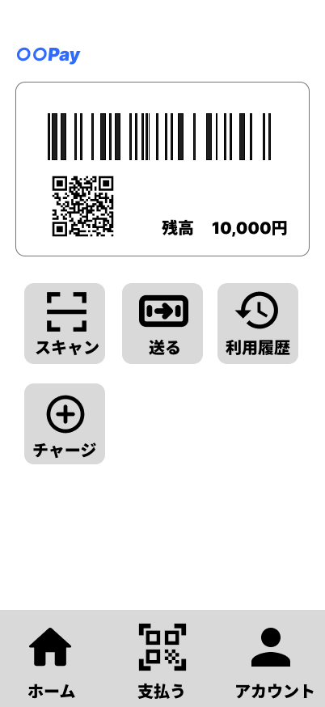

1. はじめに
スマホ決済には、残高を確認する、残高を増やす、お店で支払う、他の利用者に残高を送る、これまでの利用内容を確認するなど、さまざまな機能があります。
この教材では、それぞれの機能について、どのような場面で使うのか、どのように操作するのか、操作するとどのような結果になるのかを順番に学んでいきます。
また、スマホ決済では、一つひとつの機能が別々に使われるだけでなく、複数の機能や画面が関係しながら利用されることがあります。この教材では、それぞれの機能について学びながら、スマホ決済全体の仕組みについても確認していきます。
この教材では、実際の決済アプリや本物のお金は使用しません。教材用に作成した架空のスマホ決済アプリを使って説明します。そのため、実際のスマホ決済アプリとは、画面のデザインや細かな操作方法が異なる場合があります。

この教材では、主に次の内容を学習します。
- スマホ決済で使う残高について
- 残高を増やす方法
- お店で代金を支払う方法
- ネットサービスで代金を支払う方法
- 他の利用者と残高をやり取りする方法
- これまでに行った取引を確認する方法